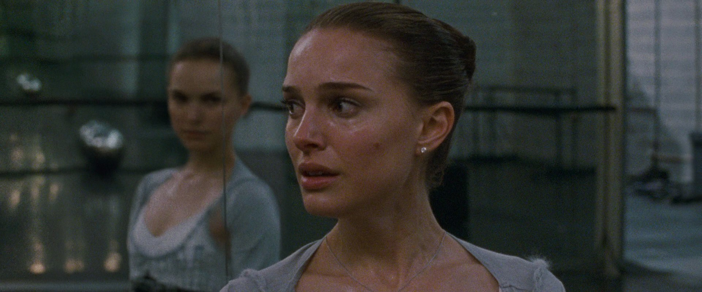
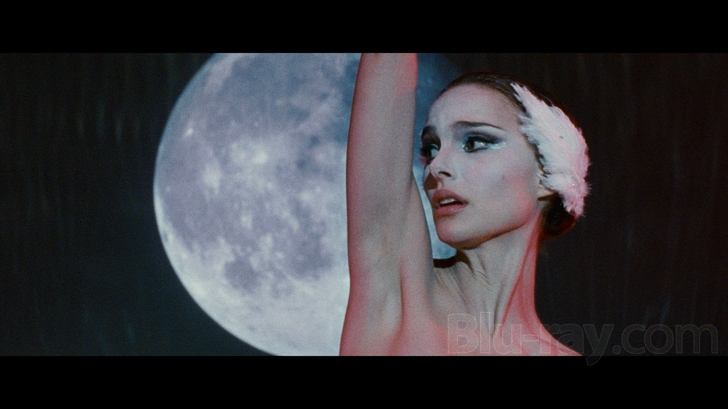

Black Swan is a 2010 American psychological horror thriller film directed by Darren Aronofsky from a screenplay by Mark Heyman, John McLaughlin, and Andres Heinz, based on a story by Heinz. The film stars Natalie Portman in the lead role, with Vincent Cassel, Mila Kunis, Barbara Hershey, and Winona Ryder in supporting roles. The plot revolves around a production of Tchaikovsky's Swan Lake by the New York City Ballet. The production requires a ballerina to play the innocent and fragile White Swan, as well as the dark and sensual Black Swan. Nina Sayers (Portman) becomes overwhelmed by pressure and competition, causing her to lose her tenuous grip on reality and descend into madness. Portman won Best Actress at the 83rd Academy Awards for her role.

Aronofsky first approached Natalie Portman about a ballet film in 2000, and she immediately showed interest. Portman wanted roles that challenged her and pushed her into more mature territory. She recommended her close friend Mila Kunis for the role of Lily. Kunis described Lily as Nina’s opposite—instinctive, free, and technically imperfect. Vincent Cassel’s character, Thomas Leroy, was inspired by George Balanchine, known for his demanding artistic control. Portman and Kunis trained intensely for the film—Portman for six months and five hours a day, reshaping their bodies for authentic ballet performance. Kunis lost 20 pounds and followed a strict regimen to transform into a dancer. The cast emphasized that real ballet could not be faked—the entire body had to change.Black Swan explores the destructive nature of perfectionism and the psychological cost it takes on an artist. Nina is a dedicated but tightly wound dancer chosen to play both swans. While she fits the purity and precision of the White Swan, she struggles to access the darker, instinctive qualities of the Black Swan. This conflict becomes the core of her unraveling—an internal breakdown where identity, desire, and expectation collide.

What makes the film so gripping is how honestly it portrays the pressure of elite performance. Nina has been shaped by her overprotective mother, her demanding director, and the ballet world’s obsession with perfection. Every correction feels personal, every mistake feels catastrophic. This pressure slowly morphs into obsession. She pushes her body past its limits, doubts her abilities, and begins hallucinating threats that blur reality. Nina’s anxiety, paranoia, and emotional instability build until she develops a stable sense of self only through the role she is destroying herself to perfect. As the performance intensifies, she spirals—blurring the line between performance and reality.